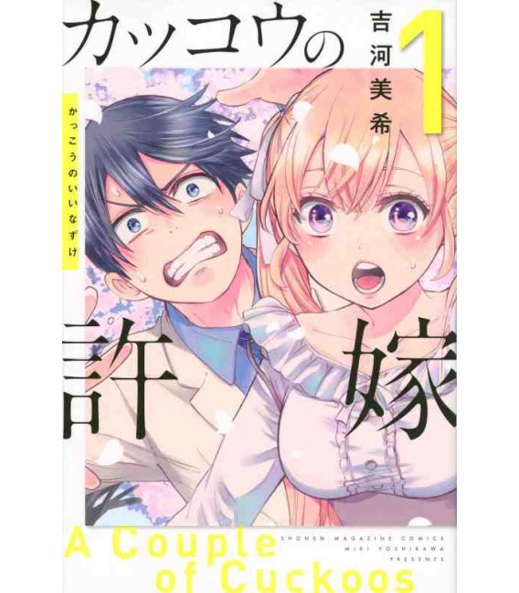

sinopse
Ono Nagi é um estudante do ensino médio de 16 anos que descobre que não é filho biológico da família que o criou. No caminho para conhecer sua família biológica pela primeira vez, ele conhece Erica Amano, uma celebridade popular da internet que está tentando escapar de um casamento arranjado. Em vez de morrer, Yuji se torna o receptáculo de Sukuna, passando a viver sob constante risco de execução. Para controlar seu destino, ele ingressa na Escola Técnica de Jujutsu de Tóquio, onde aprende a lutar contra maldições enquanto carrega dentro de si uma das maiores ameaças do mundo.
Informações
- Nome: kakkou no iinazuke
- Nome alternativo: カッコウの許嫁
- Tipo: Mangá
- Autor: Miki Yoshikawa
- Volumes: 19
- Status: Em Andamento
- Demográfico: Shōnen
- Gêneros: Romance,Comédia,Harém,Vida escolar,Slice of Life
- Editora: Shōnen Magazine Comics
- Publicado em: 2020